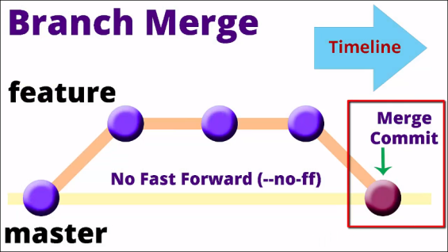

Branche et merge
Les Bases
1
git branch # list local branch
2
git branch -a # list local and remote branch (*master = local & reotes/origine/master = remote)
3
git branch mynewbranch4
git branch -a # new branch listed
5
git checkout mynewbranch # pour changer de branche
6
git branch -a
7
git log --oneline --decorate
8
git checkout master9
git branch -m mynewbranch newbranch # renommer une branche
10
git branch -a
11
git branch -d newbranch
12
git branch -a
Fast Forward Merges
1
git checkout -b title-change # crée une branche et fait un checkout sur la branche
2
git status3
npp simple.html # changer le texte4
git status5
git commit -am "Changing title of HTML"
6
git log --oneline
7
git checkout master8
git diff master title-change
9
git difftool master title-change10
git merge title-change11
git hist12
git branch13
git branch -d title-change
14
git histDisable Fast Forward Merges
1
git checkout -b add-copyright
2
git branch3
npp simple.html # ajouter du code4
git status5
git commit -am "Adding copyright notice"
6
npp README.md # Ajouter du texte7
git commit -am "Adding copyright notice to readme"
8
git hist9
git checkout master10
git merge add-copyright --no-ff
11
git hist12
git branch -d add-copyright
13
git hist
Automatic Merges
1
git checkout -b simple-changes
2
git branch3
npp humans.txt # ajouter du code4
git commit -am "Changing humans.txt"
5
git checkout master6
npp index.html # ajouter du code7
git commit -am "Changing footer on index.html"
8
git hist9
git merge simple-changes -m "Merging changes from simple-changes branch"
10
git branch11
git branch -d simple-changes
12
git histConflicting Merges and Resolution
1
git checkout -b realwork
2
git branch3
npp simple.html # Effacer la ligne 3 et 18 remplacer par un texte4
git commit -am "Changing on branch simple.html"
5
git checkout master6
npp simple.html # Effacer la ligne 3 et 18 remplacer par un autre texte7
git commit -am "Changing simple.html on master"
8
git hist9
git merge simple-changes -m "Merging changes from simple-changes branch"
10
git hist11
git diff master realwork
12
git difftool master realwork13
git merge realwork14
npp simple.html # resolve the conflit or15
git mergetool # choisir le winner et enregistrer
16
git commit -m "Done resolving merge conflit"
17
git status18
npp .gitignore # ajouter *.orig19
git status20
git add .gitignore21
git commit -m "creating ignore file"
22
git branch23
git branch -d realwork
24
git histCleanup and Push back to GitHub
1
git pull origin master2
git push origin master3